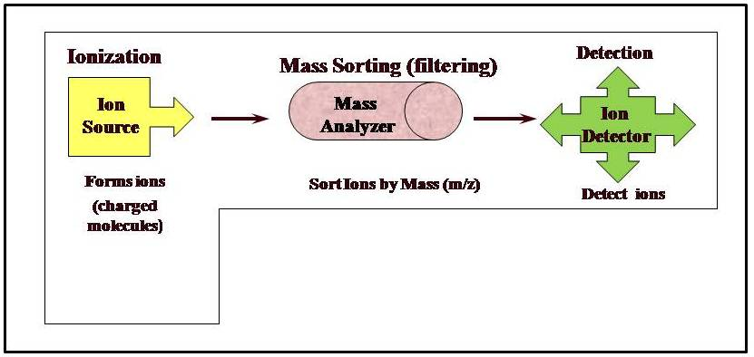
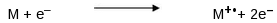
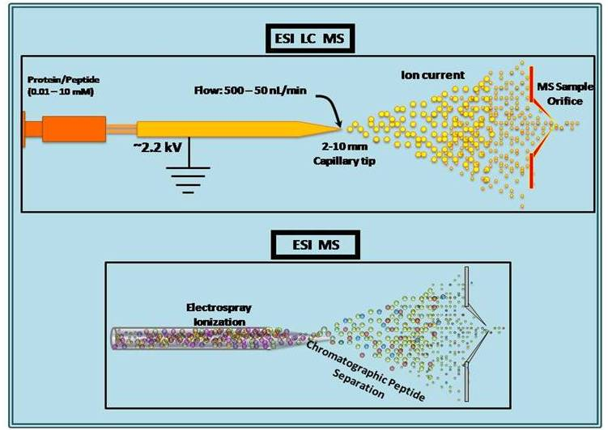
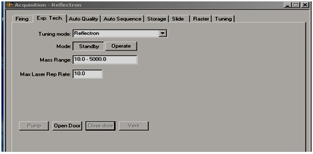
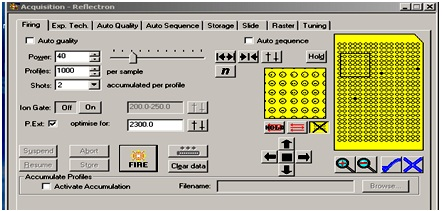

To learn the MALDI-TOF instrumentation and to generate peptide mass fingerprinting (PMF) data for the serum protein analysis.

Theory
The term proteome describes the protein complement expressed by a genome, while proteomics is the study of the entire compendium of proteins encoded by a genome for their expression, localization, interaction and post-translational modifications. Mass spectrometry is an indispensible analytical platform for proteomics studies related to protein identification and characterization. Mass spectrometry deals with the accurate mass measurement by producing charged molecular ions/species in vacuum and their separation by magnetic and electric fields based on mass to charge (m/z) ratio. Technological developments in mass spectrometry allows the characterization of proteins to its single amino acid level leading to a wide variety of applications such as protein characterization, disease biomarker detection, drug discovery etc.. In this experiment we will depict the basic principles of mass spectrometry and its applications in proteomics using Matrix-assisted laser desorption/ionization time-of-flight- time-of-flight (MALDI-TOF-TOF) mass spectrometry as a model. MALDI is an efficient process for generating gas-phase ion of peptides and proteins for mass spectrometric detection. TOF is a mass analyzer in which the flight time of the ion from the source to the detector is correlated to the m/z of the ion. It is widely used in proteomic research as a high-throughput technique to identify proteins and their post translational modifications. It is also applicable for detection of intact molecular weight of any analytes.

Figure 1. Schematic representation of three components of mass spectrometer; ionization source to generate analyte ions, which starts moving in mass analyzer to get separated from each other depending upon mass/charge ratio, later the analyte ions are detected in ion detector.
Every mass spectrometer has three basic components: ionization source, mass analyzer and detector.
1. Ionizer:
The initial and important part of the MS; here gas phase ions of the molecules are produced when exposed to laser beam in presence of an ionizing source or matrix. The main reason behind production of gas phase ions is that the mass analyzers are capable of analyzing molecules only if they are charged, so success of good analysis depends on good ionization of the molecule. Formation of ions may be due to the addition of a proton or removal of an electron. Depending upon the property of the analyte the resultant ion may be singly or multiple charged. Once the molecule is ionized it is ready to be separated in mass analyzer. Although various kinds of ionization methods are available, for proteomics applications mainly ESI and MALDI are being used. These are designated as soft ionization techniques due to its nature of ionization which is very helpful in ionizing and studying intact biological molecules. These ionization methods have successfully replaced the old conventional physical ionization techniques which are not compatible for biological molecules.
(a) Electro-spray ionization (ESI):
ESI method was invented by Prof. John B. Fenn. This land mark discovery was awarded with Noble prize in chemistry in the year of 2002. Here the neutral molecules are transformed into ions by bombarding with high energy electrons. Ions may be singly or multiple charged due to loss of single or many electrons respectively. Following is the reaction occurring in the gas phase resulting in molecular ions;

Where M is the atom of the molecule being ionized, e− is the electron, and M+ ° is the resulting ion. In most of the cases, ESI is coupled with liquid chromatography for the online monitoring of the separated molecules. The fraction of liquid containing desired molecule is directly subjected to ESI source so that the molecules can be subjected to subsequent MS analysis. Depending on the application one can select the suitable ionization source.

Figure 2: Schematic representation of electro-spray ionization (ESI); the protein/peptide solution is allowed to pass through the capillary tip with pressure and constant flow rate. Due to the small opening of the capillary the sample solution get burst into small ions.
The ESI source acts in atmospheric pressure. De-solvation is carried out simultaneously to get rid of liquid components present in sample. Usually warm nitrogen gas assists the process of de-solvation. As the sample droplet moves further it enters a region of vacuum, where the charge on the droplet increases and results in single or multiple charged molecules. Further these molecules enter into the mass analyzer and get separated on the basis of their m/z ratios.
(b) Matrix assisted laser desorption ionization (MALDI):
MALDI is one of the most widely used soft ionization techniques. This ionization method was independently developed by two inventors; Koichi Tanaka and Franz Hillenkamp. Koichi Tanaka received the noble prize for development of this soft desorption ionization methods for mass spectrometric analyses. A chemical compound referred as matrix used for ionization of the sample. Matrix molecules have a specialized property of getting excited to higher energy state when encountered with UV-LASER beam. Thus while coming back to the ground state they concomitantly give out energy which in turn is received by the sample molecules, leads to the formation the ions of interest. Generated ions may receive a single proton and forms [M+H]+. Ionized molecules enter the mass analyzer and form the mass spectrum. The whole process of ionization and separation of ions takes place in high energy vacuum. There are various kinds of matrixes commercially available. Usually these matrices are low molecular weight aromatic compounds and interfere less with sample molecules. Depending upon the sample to be analyzed the matrices are selected. The MALDI can be utilized for wide variety of applications.
2. Mass analyzer:
Ions entered into the mass analyzer get separated solely on the basis of m/z ratio, irrespective of other parameters such as chemical properties. There are various types of mass analyzers which differ with each other with respect to the principle involved in separation. The whole mass analyzer acts in vacuum so that the highly reactive ions do not cross react or collide with other ions moving simultaneously in the space. This ensures the ions are separated to give accurate results on basis of their m/z ratio. Conventionally most of the instruments maintain pressure ranging from 10-4 to10-8 tor. The level of the vacuum maintained depends on the mass analyzer being used. Some of the commonly used mass analyzers are as follows;
- Quadrupole (Q)
- Ion trap (IT)
- Time-of-flight (TOF)
- Fourier transform ion cyclotron resonance (FTICR)
Each of these mass analyzers has their unique advantages and disadvantages. We will discuss bit more about TOF because this is most widely used in combination with MALDI. As the name indicates Time of Flight separates the ions based on the flight times taken by the ions to travel between two points. Here all the ions are accelerated at a same time and it is taken into consideration that all the released ions have same kinetic energy. Depending upon the m/z ratio, lighter ions reach the target first and heavier reach late.

Figure 3. Schematic representation of matrix assisted laser desorption ionization-time of flight/time of flight (MALDI-TOF/TOF) MS, the protein/peptide solution along with matrix is spotted on to MALDI plate along with the standard mix and is bombarded with laser. The analyte molecules take up the charge and peptide ions are formed which get separated in the mass analyzer depending upon the mass/charge ratio and get detected by the ion detector to generate a spectrum.
3. Detector:
The process of ionization and separation in mass analyzers happens within few nano seconds; hence the process of separation must end with an efficient detection of the separated molecules/ions. The third component of a mass spectrometer, called detector performs this task of detecting ions separated on the basis of charge, mass or velocity. Its main function is to get the information from mass analyzer and convert those into electric signals which are then multiplied by the photo-multiplier tubes. Ultimately, these signals are read by the data system to bring out mass spectrum.

After spotting on the MALDI plates , samples are allowed to dry for 30 min . Then the instrument is switched om and the MS analysis is performed according to the following steps.
- Click on " Launchpad" and then open "Kompact software".
- Go to instrument.
- Open " Aquisition Window".
- Click on "Exp. Tech".
- Click on "Open Door".

Figure 4. Representation of the software Window used for MALDI instrumentation for defining the experimental tech in Aquisition Mode.
- Insert the MALDI target plate (face up with the cut - off corner to the front ).
- In Exp. Tech , click close door.
- Allow it to create vaccum.
- In Exp. Tech windows : Linear or Reflectron , depending on sample (for less than 10,000 amu use reflectron mode).
- Set the mass range e.g. 10-5000Da.
- Then go to firing tab , set the power to 50 , profiles 1000 ns shots to 2. 
- Set the "Ion gate" OFF { for post -source decay (PSD) analysis ion gat should be kept on }.
- Then right click on the yellow target in the Aquisition window and " select go to location " and type the location of pep-mix , e.g. D1.
- Click on "processing" from main tab then "peak processing". Set typically smoothing off (for PSD it is average ) and select baseline subtraction.
- Click on "Monoisotopic peak" .Select "All display" and click "Apply to".
- Click on "Fire" . During the aquisition , Check the resolution of the highest mass standard peak.
- To check the resolution during an aquisition , click "suspend" to pause the aquisition. When the resolution has been measured , click " resume" to continue the aquisition . For peptide standard ACTH fragment 18-19 (m/z 2465.20), the rsolution should be > 5000 . If resolution is much lower then reduce the laser power to improve resolution.
- Move the target to find a " Sweet Spot ". Use clear data button to restart the accumulation once a satisfactory position has bee found on the sample spot.
- Once a satisfactory spectrum is obtained , click " Abort " to stop aquisition.
- Click " Store " to save the spectrum .
- In calibration window create a calibration file . Insert the mass of calibration standards , calibrate and save it.
- Now go to " Location " . Type the location for sample . And Click of " FIRE" and Look for a sweet spot for sample by moving the cursor . Once a satisfactory spectrum has been obtained , click " Abort and Store" to stop and save the spectrum.
- Result of the MALDI-TOF analysis can be saved either as ASCII files or the mass pick list can be saved manually. Further data - base analysis for identification of the protein has been disscussed in Exp. 7.
Figure 5: Representation of the software window used for MALDI instrumentation for defining the parameters of firing tab in Aquisition mode.
Figure 6 : Representation of thr camera view window used in MALDI instrument for selection of the best position with in a spot.


THEORY OF MALDI-TOF
INSTRUMENTATION OF MALDI-TOF

References :
1. Dave KA et al. Preparation and Analysis of Proteins and Peptides Using MALDI TOF/TOF Mass Spectrometry. Curr Protoc Protein Sci. 2011; Chapter 16:Unit16.13.
2. Baldwin MA. Protein identification by mass spectrometry: issues to be considered. Mol Cell Proteomics. 2004; 3, 1-9.
3. Hillenkamp F. et al. Matrix-assisted laser desorption/ionization mass spectrometry of biopolymers. Anal Chem.1991; 63, 1193A-1203A.
4. Karas Meta et al. Ionization in matrix-assisted laser desorption/ionization: singly charged molecular ions are the lucky survivors. J Mass Spectrom. 2000; 35, 1-12.
5. Hillenkamp F et al. Mass spectrometry of peptides and proteins by matrix-assisted ultraviolet laser desorption/ionization. Methods Enzymol. 1990; 193, 280-295.
6. Mirgorodskaya OA et al. Quantitation of peptides and proteins by matrix-assisted laser desorption/ionization mass spectrometry using (18) O-labeled internal standards. Rapid Commun Mass Spectrom. 2000; 14, 1226-1232.
7. Zaluzec EJ et al. Matrix-assisted laser desorption ionization mass spectrometry: applications in peptide and protein characterization. Protein Expr Purif. 1995; 6, 109-123.
8. Kerstin S Trupat, Molecular Weight Determination of Peptides and Proteins by ESI and MALDI, METHODS IN ENZYMOLOGY,2005; Vol. 405.

Instructors’ assignment:
Course instructors should explain the basic theory of MALDI-TOF and play the animation in class before providing the detail experiment protocol. Once the students become familiar with the overall procedure they can be evaluated through the related questions provided under “Quiz” and “Assignment” sections.
Assignment for students:
Students should click on the simulator window to run the animation and there are provisions for the learners to participate actively in the over-all MALDI-TOF instrumentation process by clicking on the equipments, computer screen etc. using interactive animations during the different steps of the instrumentation process. Students are strongly advised to go through the references provided in “Reference” section for further knowledge.
Questions:
- What is mass spectrometry?
- What are the different applications of mass spectrometry?
- What are the major components of a mass spectrometer?
- What is soft ionization? Mention two soft ionization methods.
- What is MALDI? How does it differ from ESI?
- What is mass analyzer? Which mass analyzer is most suitable for MALDI ion source?
- What is reflectron mode? How does it differ from linear mode of operation?
- Which mass spectrometer generates multiple charge states?
- Who had received the noble prize for development of soft desorption ionization methods for mass spectrometric analyses?